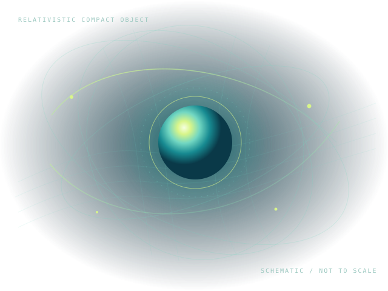

R01 / MATTER✳
Neutron stars & dense matter
Relativistic stellar structure, equations of state, mass–radius relations, compactness, surface gravity, redshift, and the macroscopic properties of dense matter.
TOV equationsEOSMass–radius
I investigate compact objects and strong-field gravity, using relativistic modelling and numerical methods to understand neutron stars, black holes, and the signals they leave in the universe.

RESEARCHER PROFILE
I am Ankit Khunt, a relativistic astrophysicist whose work centres on understanding gravity in its strongest regimes. I earned my Ph.D. in Theoretical Astrophysics from Sardar Patel University, India, in 2024, with training in theoretical and computational astrophysics. I have been associated with the Department of Physics at Sardar Patel University as a visiting researcher since 2023.
My research asks how gravity behaves where spacetime is strongly curved and matter reaches extreme densities. I study neutron stars and black holes as laboratories for General Relativity and its extensions, combining semi-analytical relativistic modelling with numerical calculations to connect theory with astrophysical observations.
A major focus is the structure and stability of neutron stars: how pressure anisotropy changes mass, radius, and stability; how dark matter may alter stellar interiors in two-fluid models; and how modified gravity can affect observable properties. I am interested in gravitational waves, quasi-periodic oscillations (QPOs), tidal response, orbital dynamics, and post-merger signals as ways to test these models.
At the black-hole end, I am interested in near-horizon physics and gravitational-wave echoes as possible probes of departures from classical horizon behaviour. More broadly, I am motivated by the way mathematical structure in relativity links matter, space, and time—and by how observations can challenge that structure.
My work combines relativistic theory, stellar modelling, and astrophysical diagnostics. These themes share a common question: what can compact objects tell us about matter and gravity under the most extreme conditions?
Relativistic stellar structure, equations of state, mass–radius relations, compactness, surface gravity, redshift, and the macroscopic properties of dense matter.
Core–envelope models, anisotropic pressure, sound-speed constraints, cracking stability, and the possible role of elastic or quake-like energy release.
Two-fluid dark-matter-admixed stars and extensions of General Relativity, including Starobinsky-type f(R) gravity and energy–momentum-squared gravity.
Relativistic geodesics, orbital and epicyclic frequencies, tidal deformability, moment of inertia, and potential signatures in electromagnetic and gravitational-wave observations.
Interested in collaboration? Get in touch to discuss compact objects, relativistic modelling, or computational astrophysics.
One featured publication is included below. Add the rest of your verified bibliography and profile links as they are finalised.
JOURNAL ARTICLE / GENERAL RELATIVITY
Journal of Cosmology and Astroparticle Physics · JCAP 05 (2026) 009
This work investigates how anisotropic matter affects neutron-star structure and spacetime curvature in relativistic stellar models.
These search links help visitors locate indexed work without assuming profile identifiers.
Publication note: Please verify author order, co-authors, article abstract, and citation format against the publisher record before adding a full bibliography.
I combine analytical reasoning with numerical modelling to explore relativistic systems and their potential observational signatures.
Einstein field equations · TOV systems · Anisotropic fluids · Geodesics
Python · NumPy · SciPy · Matplotlib · Fortran
Mathematica · Maple · SageMath · Tensor calculations
LaTeX · Overleaf · Numerical integration · Data visualisation
QPO frequencies · Tidal Love numbers · I–Love–Q relations · Bayesian inference
Alongside research, I have taught physics, astronomy, and mathematics at university level. My teaching approach connects conceptual understanding to mathematical structure, with examples drawn from mechanics, gravitation, and astrophysics.
I also enjoy communicating compact-object physics to students and general audiences, especially the ideas that connect black holes, neutron stars, spacetime, and observable signals.
Sport has been an important part of my life. I am a self-trained cricketer who represented my district and state at Under-16 level and my university in the All India Inter-University Cricket League (West Zone). I also enjoy badminton and football.
More about my journey ↗For research discussions, collaboration, seminars, or project opportunities, feel free to get in touch.